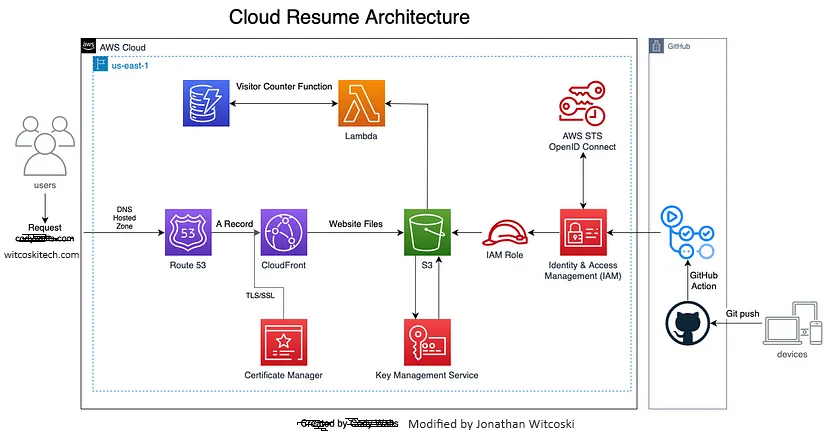

About
I am a Geographer specializing in frontend and backend development for a complex scalable web map app.
Want to know how I may help your project? Check out my project portfolio and online resume.
Cloud Resume Challenge
Open Source

This webpage was built to challenge myself to master the cloud by building this website using various AWS components. Read the blog here
Experience
Geographer
DRT Solutions / Centers for Disease Control and Prevention
March 2022 – Current
Developed interactive security-focused dashboards for public health analysis, enhancing data accessibility while ensuring compliance with federal security standards. Implemented IAM security best practices across cloud infrastructure, ensuring proper authentication and authorization controls. Managed cross-functional teams to deliver complex projects on schedule while addressing security requirements.
Technology Stack: Microsoft Entra ID, R, ESRI, PowerBI, DAX, Python, D3.JS
GIS Data Engineer / Data Conversion Scrum Master
Saicon/National Grid
May 2021 – March 2022
Spearheaded migration of sensitive geospatial data from legacy systems to secure cloud infrastructure in Azure. Designed and implemented robust security protocols for data transmission and storage. Developed and modified SQL scripts for geospatial data analysis with security controls for quality assurance. Managed Scrum processes across multiple teams, ensuring on-time delivery while addressing security concerns.
Technology Stack: Azure, Python, ArcPy, ESRI, SmallWorld, Infrastructure as Code
Geographer
US Census Bureau
November 2016 – March 2021
Managed modification and improvement of Census boundaries following strict security protocols for sensitive data. Developed custom Python tools for secure processing of geographic data, reducing processing time by 30%. Collaborated with cross-functional teams to implement security best practices for geospatial workflows.
Technology Stack: Oracle, Python, ArcPy, ESRI, QGIS, SQL
GIS Systems Administrator / Software Engineer
C2 Solutions Group Inc.
May 2014 – November 2016
Led infrastructure security initiatives for GIS platforms used by sensitive government organizations. Managed installation, configuration, and administration of secure GIS tool suites. Provided technical support and security guidance for ESRI-based GIS systems to ARNG-ILI and ARNG-ILE divisions. Developed and maintained security metrics dashboards for system monitoring. Implemented security controls and best practices across GIS infrastructure.
Technology Stack: ArcGIS Server, ESRI Portal, ESRI License Manager, Sharepoint, Windows Server, Linux, Python
Geospatial Analyst
Booz Allen Hamilton
October 2009 – May 2014
Provided geospatial analysis and mapping for DHS and FEMA security-critical projects. Developed secure geospatial solutions following federal security standards. Led risk assessment initiatives for geospatial infrastructure. Collaborated with security teams to implement controls and safeguards for sensitive location data.
Technology Stack: Python, ArcGIS, Security Frameworks
GIS Specialist
Tyco Telecommunications
2007 – 2009
Developed a spatial database of an underwater telecommunication cable, sonar data, and various other information of relevance to the company. Prepared a table, map, and graph for use in the completion of a final report and internal spatial data query.
Technology Stack: Python, AutoCAD, FME
GIS Specialist
WDG Location Consulting
2007
Performed spatial analysis for site selection and market research.
GIS Specialist
Philmont Scout Ranch
2007
Mapped trails and facilities for one of the largest Scout camps in America.
Intern
National Geographic Society
2003
Education
Master of Science in Geography
University of Tennessee
2004 - 2007
Bachelor of Arts in Geography and Anthropology
Penn State University
2000 - 2004
Minor in Geographic Information Science
Skills &
Certifications
Skills
Cloud & DevOps
- Amazon Web Services (AWS)
- AWS IAM
- AWS Step Functions
- AWS Lambda
- AWS S3
- AWS API Gateway
- AWS SQS
- DynamoDB
- Bedrock AI models
- Microsoft Entra ID
- Infrastructure as Code (IaC)
- Terraform
- CI/CD (Continuous Integration/Continuous Deployment)
- Serverless Architecture
- Git
- PowerShell
Geospatial Technologies
- ESRI
- ArcPy
- QGIS
- GeoPandas
- GeoServer
- Mapbox
- Leaflet
- D3.js
Data & Analytics
- Python
- SQL
- Power BI
- DAX
- Oracle
- API Development
- R
- Security Frameworks
Certifications
-
AWS Certified Cloud Practitioner
(2021)
Projects
Cloud Resume Challenge
Open Source | 2022-2024
Implemented a full-stack serverless architecture using AWS S3, CloudFront, Lambda, API Gateway, and DynamoDB. Configured Route 53 for domain management and AWS Certificate Manager for SSL/TLS security. Established CI/CD pipelines using GitHub Actions for automated testing and deployment. Designed and implemented IAM security policies following best practices.
Technology Stack: AWS S3, CloudFront, Lambda, API Gateway, DynamoDB, Route 53, AWS Certificate Manager, GitHub Actions, IAM
Project Website: witcoskitech.com
Global Ski Atlas
Open Source | 2024-current

Architected and deployed comprehensive AWS serverless infrastructure using Step Functions, Lambda, DynamoDB, S3, API Gateway, and SQS to automate ski resort data processing, integrated with Amazon Bedrock's Nova model for AI-generated resort descriptions. Designed RESTful API endpoints and orchestrated complex Step Functions workflows with 8+ Lambda functions to query OpenStreetMap, process data through SQS queues, and store enriched metadata in DynamoDB with S3 references. Developed automated deployment scripts and QGIS workflows to extract ski resort geometries from OpenStreetMap, creating high-resolution cartographic products and migrating to interactive D3.js web visualizations. Implemented serverless data pipelines connecting Google Sheets to S3 and DynamoDB, currently conducting spatial analysis using Python (Pandas + GeoPandas) for weather overlays and elevation metadata.
Technology Stack: AWS Step Functions, Lambda, DynamoDB, S3, API Gateway, SQS, Amazon Bedrock, QGIS, OpenStreetMap, D3.js, Python, Pandas, GeoPandas
Project Website: globalskiatlas.com
Unity Game
GIS SDK API

Here is an example of my Unity game I created using a GIS SDK API. This game is available to be played on a Windows PC. Visit Unity Game
Technology Stack: Unity, C#, GIS SDK API
Contact